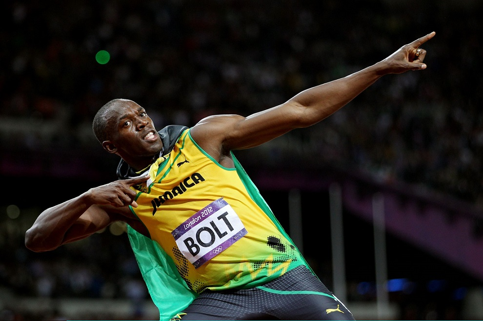

Bibliografia
Nació el 21 de agosto de 1986 en Sherwood Content, Trelawny, Jamaica. Hijo de Wellesley y Jennifer Bolt, propietarios de una tienda. Tiene un hermano, Sadiki, y una hermana, Sherine. Estudio en la escuela Waldensia, donde comenzó a mostrar sus habilidades en las carreras de velocidad, con 12 años, ya era el corredor más rápido de su escuela en los 100 m lisos. En la escuela secundaria William Knibb su entrenador de criquet le recomendó practicar el atletismo. Pablo McNeil, ex atleta olímpico en pruebas de velocidad y Dwayne Barrett, fueron sus entrenadores.
